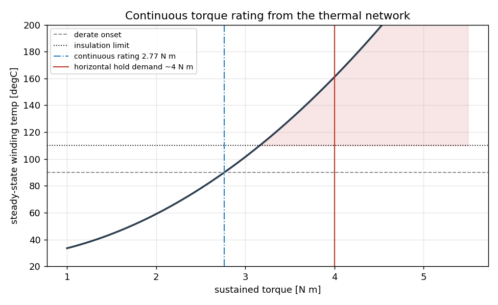
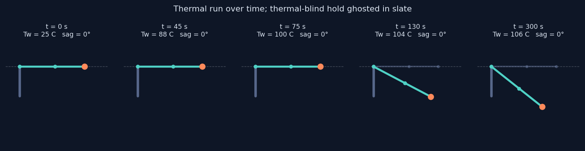
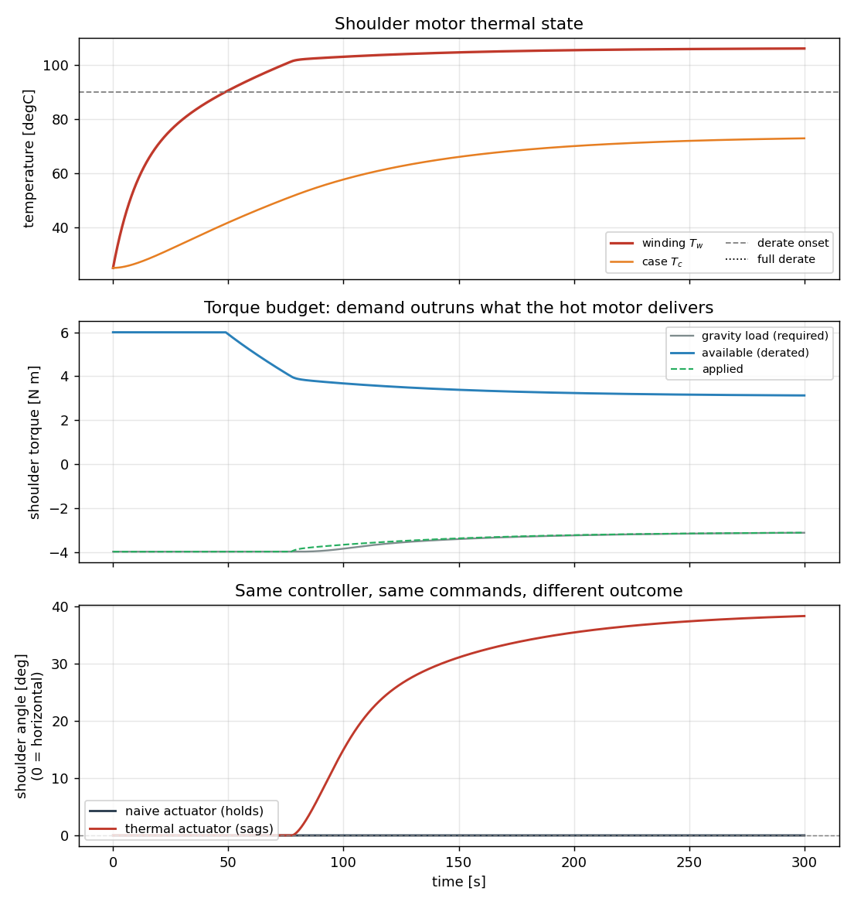

0°
SAG, THERMAL-BLIND SIM
Model the motor as a thermal device, not a constant torque source. A joint holding a heavy pose heats its windings, the drive derates torque to protect the insulation, and the reachable torque falls. A thermal-blind sim lets a controller command holds the hardware cannot sustain.
Torque is proportional to motor current, and copper loss scales with the square of current. Holding torque therefore dissipates heat in the windings continuously, even when the arm is not moving. That heat is modeled with a two-node lumped-capacitance thermal network, the same resistance-capacitance abstraction used across electronics cooling, here mapped onto a motor: a fast winding node and a slower case node, each with a heat capacity, linked by thermal resistances to each other and to ambient.
Torque available to the controller rolls off linearly once the winding passes a derate threshold and is clamped at an insulation limit. Because dissipation grows with the square of torque, the feedback between load and heat is sharp, which is exactly why it surprises a controller tuned without it.
The model is not only for simulation. It exposes closed-form analysis so the actuator can be sized. The continuous torque rating is the sustained torque whose steady-state winding temperature sits at the derate threshold. The two thermal time constants are the eigenvalues of the network, a fast winding response and a slow case response.
| Quantity | Value | Meaning |
|---|---|---|
| Peak torque | 6.00 Nm | short-term, thermally unconstrained |
| Continuous rating | 2.77 Nm | sustainable within the derate threshold |
| Winding time constant | 10.6 s | how fast the winding heats |
| Case time constant | 169 s | how fast the housing follows |

The arm is commanded to hold a fully extended horizontal pose with a payload, which needs roughly 4 N m at the shoulder. The controller is a correct gravity-compensating PD law and is identical in both runs. The only thing that changes is the actuator model.
| Thermal-blind actuator | Thermal actuator | |
|---|---|---|
| torque available | peak, always | derates with winding temp |
| final shoulder angle | 0° (holds) | 38° (sags) |
| peak winding temp | not modeled | 106 C |
The thermal-blind arm holds horizontal indefinitely. The thermal arm holds, heats past the derate threshold at about 55 seconds, loses the torque to fight gravity, and sags to a drooped equilibrium where the reduced gravity load matches what the hot motor can still deliver. Same controller, same commands, different outcome. That is the failure a thermal-blind sim hands to hardware.


This is the electronics-cooling and lumped-network thermal modeling I work in and publish, most recently thermal resistance network analysis of a two-phase cooling module at IEEE ITherm 2026, carried into robotics simulation. Most sim-to-real effort tunes friction, damping, and inertia. Very little of it models the actuator as a thermal device, even though sustained-load derating is a real and common reason a sim-tuned policy underperforms on hardware. The model here is small, physically grounded, and drops into any torque-controlled joint.
Friction and inertia identification make a model match short, cool motions. They say nothing about a joint that has been holding load for a minute. Thermal derating is where a sim that looked validated still lies to the controller.
pip install mujoco numpy matplotlib
python src/thermal_actuator.py # characterization report
MUJOCO_GL=egl python src/run_thermal_demo.py # thermal-blind vs thermal A/B